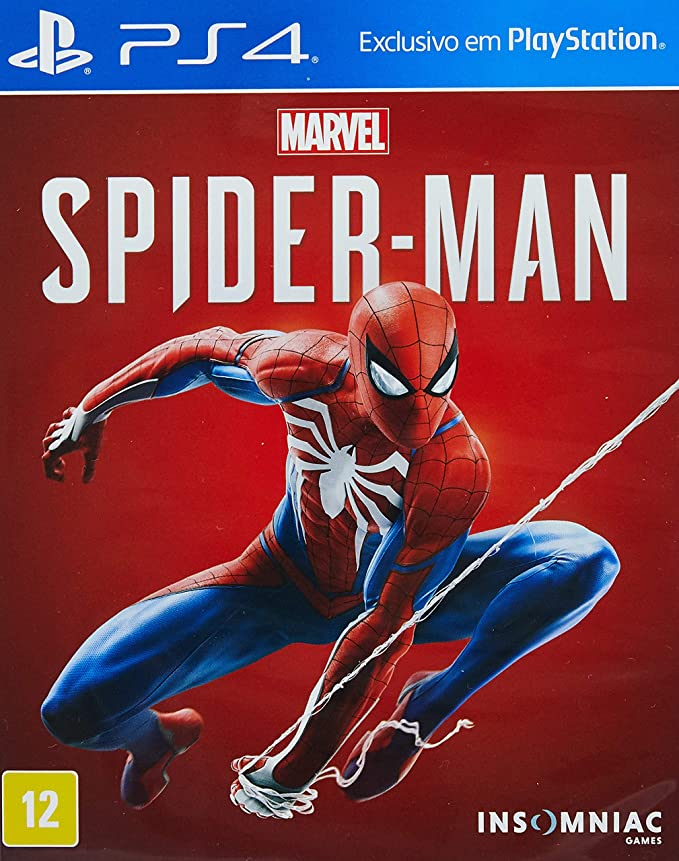
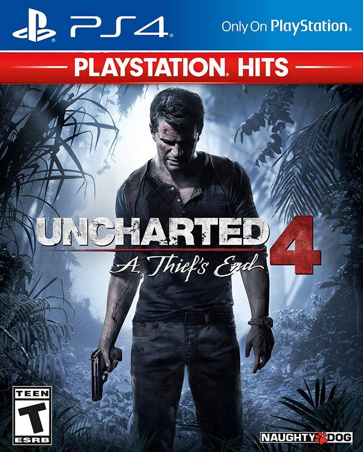
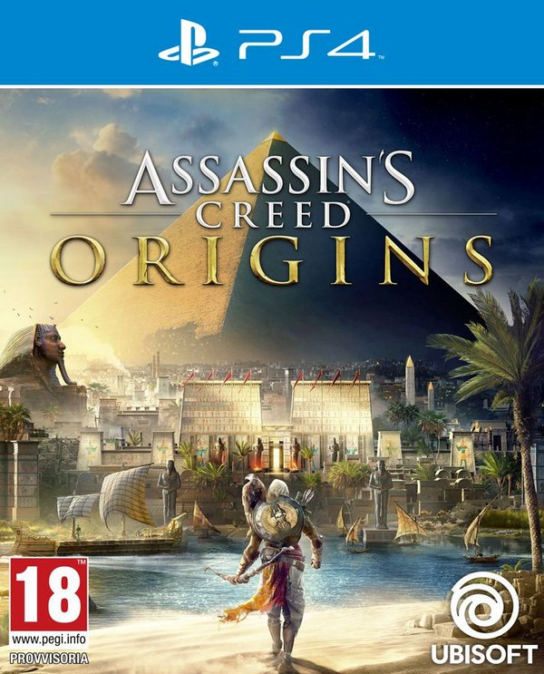

Alguns de seus jogos:





Tendo uma base solida de fas e empresas de jogos parceiras ao longo dos anos, o console conquistou um numero enorme de jogos em seu acervo ao longo do caminho. Dentre esses, seus famosos "Exclusivos" que sao um prato cheio em qualidade, para qualquer gamer que se preze